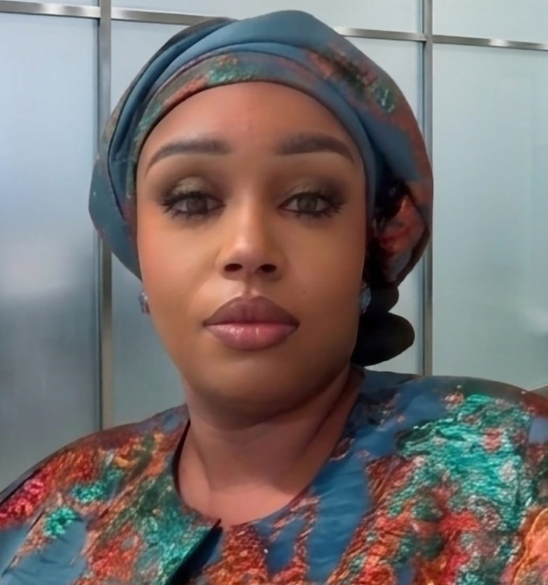

Message d'Aïssatou Diallo Camara — Plateforme Autisme Sénégal (P.A.S)

Plateforme Autisme Sénégal (P.A.S)
« L'autisme n'est pas une fatalité, mais une différence qui mérite respect, dignité et inclusion. Ensemble pour l'autisme, faisons entendre la voix des familles sénégalaises et bâtissons une société où chaque enfant TSA peut grandir différent, mais jamais seul. »
Chères familles, chers partenaires, chers concitoyens,
Au Sénégal comme ailleurs en Afrique, l'autisme reste trop souvent méconnu, diagnostiqué tardivement et insuffisamment pris en charge. L'Organisation mondiale de la Santé estime qu'1 enfant sur 100 souffre des Troubles du Spectre de l'Autisme (TSA), et que 15 millions de personnes sont touchées par l'autisme en Afrique. Au Sénégal, les estimations avoisinent 0,8 % de la population, un chiffre qui traduit des milliers de familles en quête de réponses, de structures adaptées et de reconnaissance sociale.
En tant que mère de deux enfants autistes et présidente de la Plateforme des Associations intervenant dans l'Autisme au Sénégal (P.A.S), je connais intimement le parcours des parents : l'incertitude du diagnostic, la recherche d'écoles inclusives, l'accès limité aux spécialistes, la charge émotionnelle et financière, mais aussi la force, la résilience et l'amour inconditionnel qui nous animent.
C'est pour répondre à ces défis que la P.A.S fédère aujourd'hui 12 associations actives sur tout le territoire. Notre ambition est claire : unifier les voix du secteur associatif, renforcer le plaidoyer auprès des institutions publiques, faciliter l'accès à la formation des professionnels de santé et de l'éducation, et créer des ponts entre familles, praticiens, écoles et bailleurs de fonds.
Chaque 2 avril, Journée mondiale de l'autisme, nous rappelons que l'inclusion n'est pas un luxe mais un droit. Nos actions — conférences, sensibilisations, répertoires de ressources, événements culturels — visent à faire évoluer les mentalités et à garantir que plus aucun enfant ne reste invisible faute de structures ou de compréhension.
Je remercie le bureau exécutif, le conseil d'administration, nos associations membres et l'ensemble des partenaires qui croient en une autisme-friendly Sénégal. Rejoignez-nous, soutenez nos initiatives, partagez nos messages. Parce qu'ensemble, nous pouvons transformer le regard porté sur l'autisme et ouvrir la voie à une société plus juste et plus humaine.
Aïssatou Diallo Camara
Présidente — Plateforme Autisme Sénégal (P.A.S)